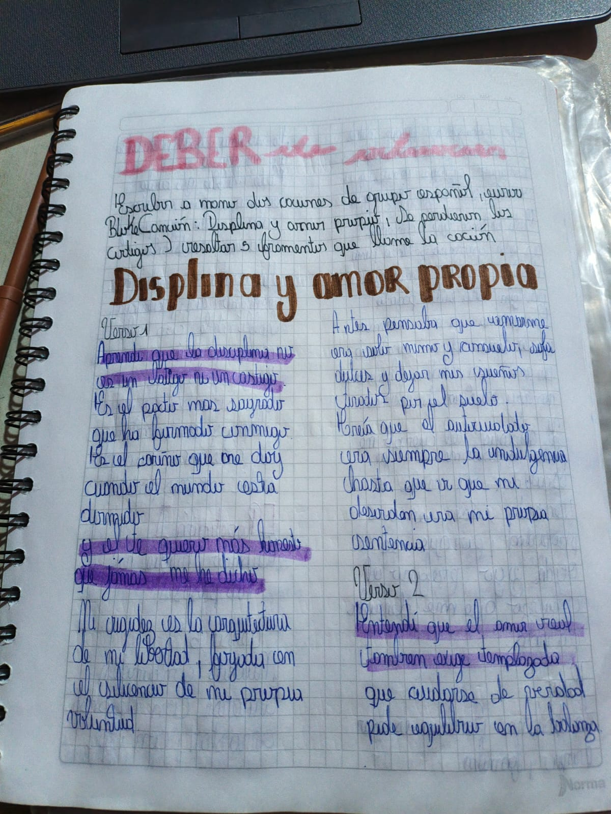
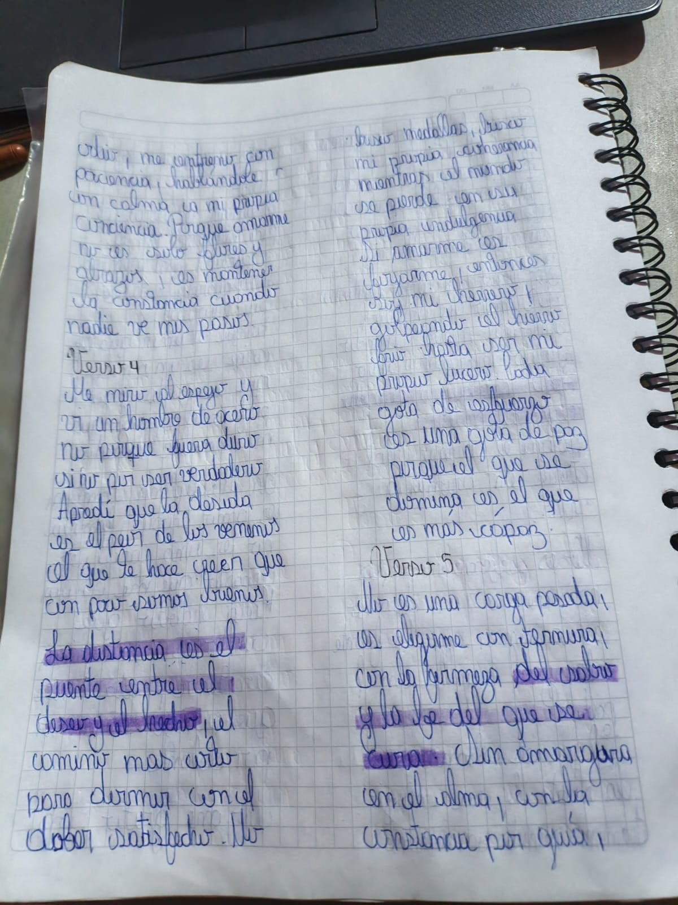
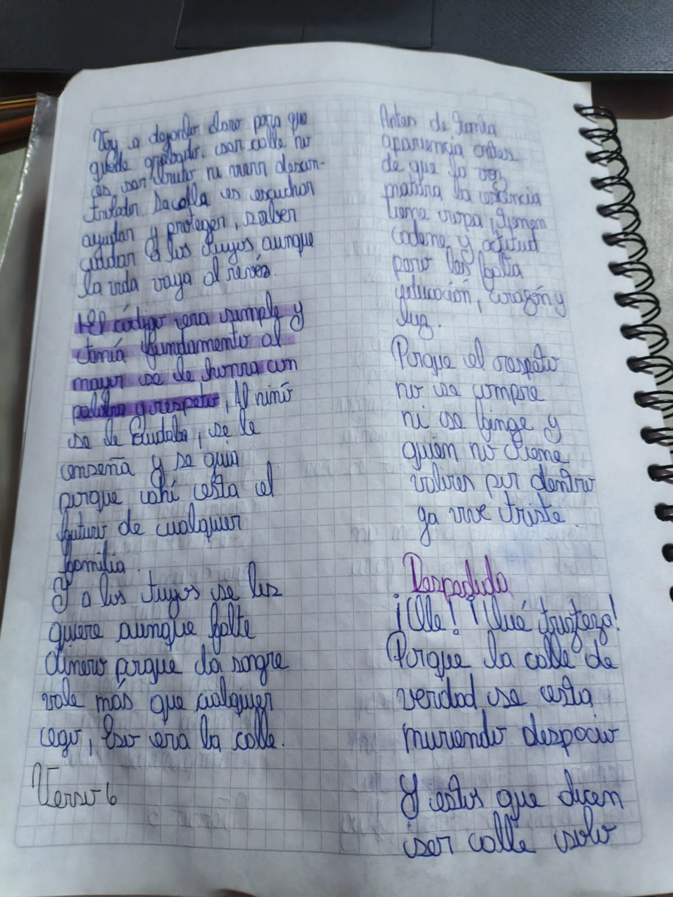
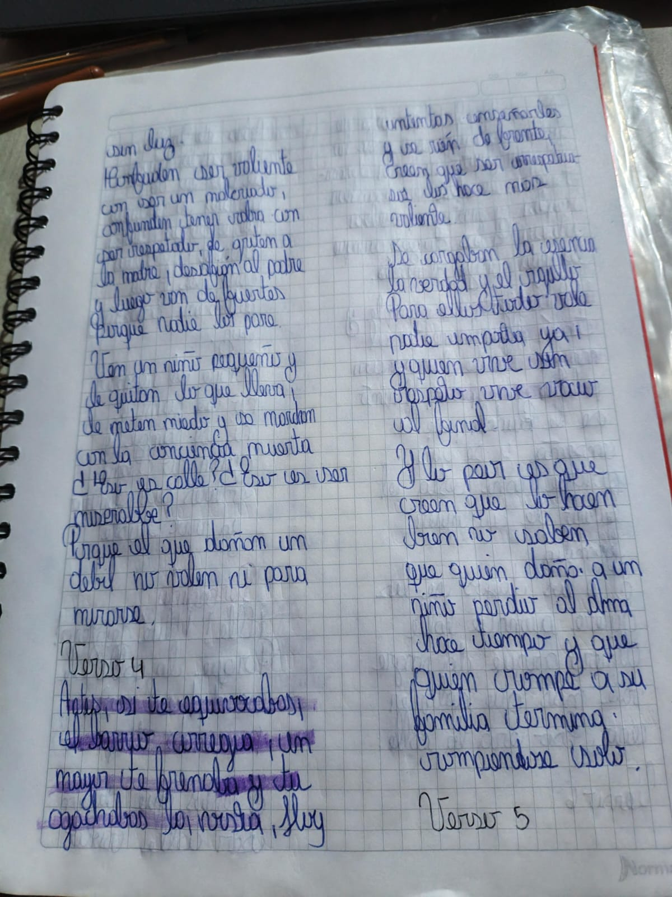
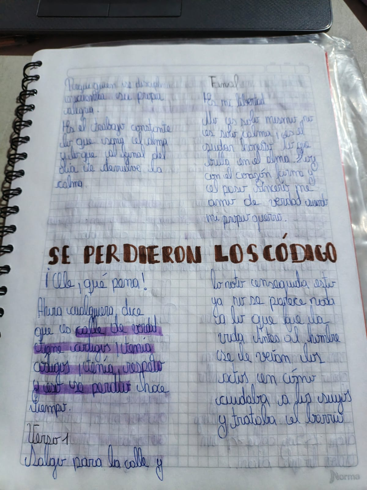
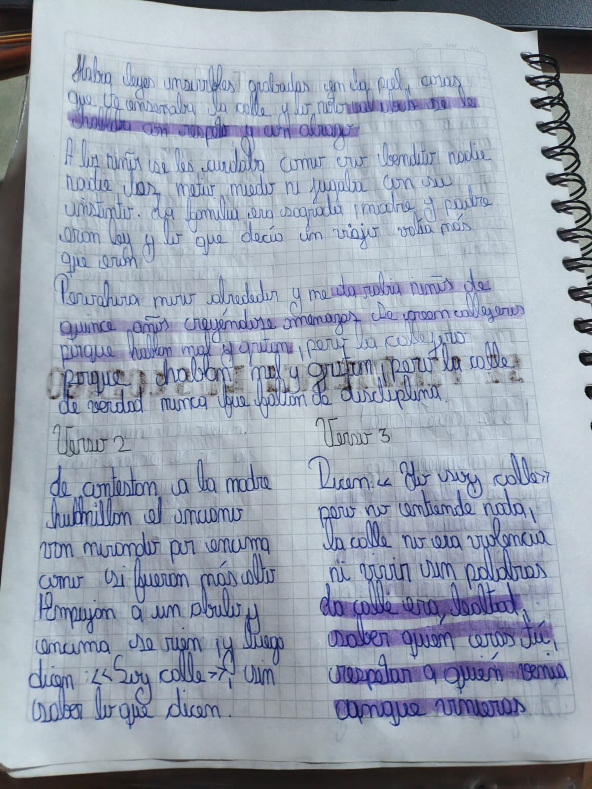
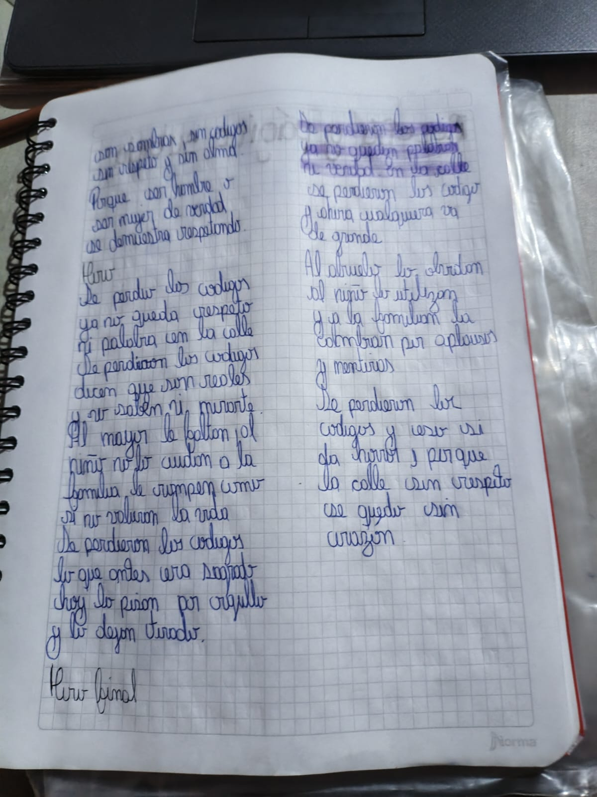
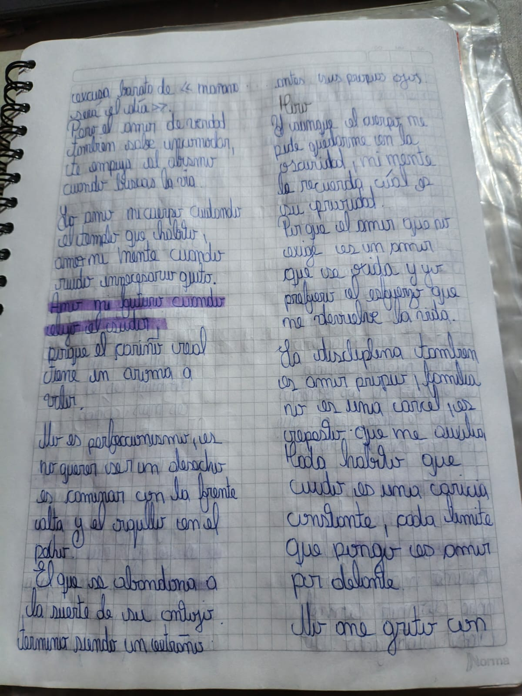
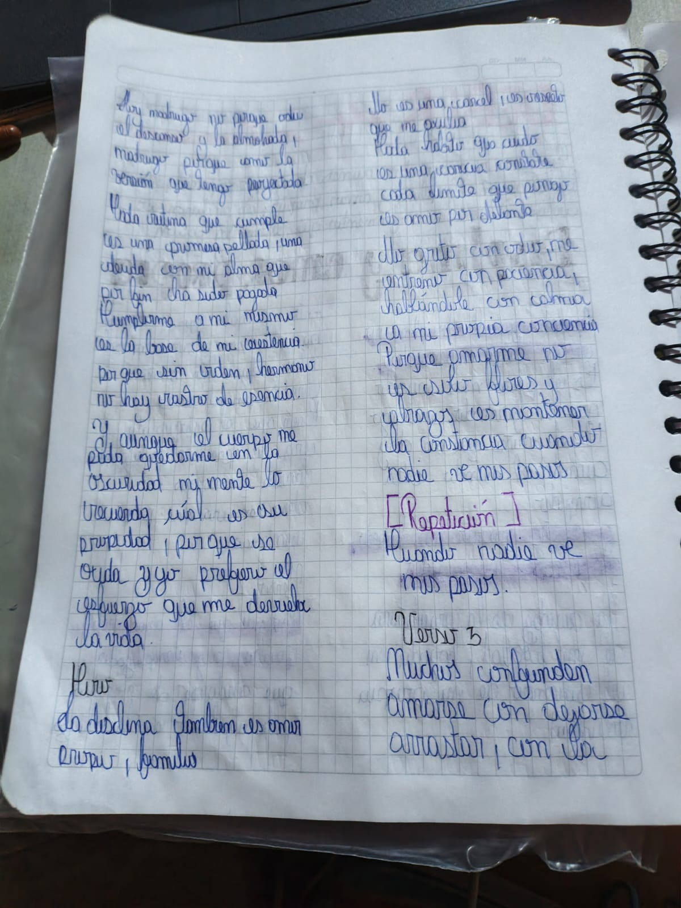

Reseña de Música
Reseña uno: Disciplina y amor propio
La canción Disciplina y amor propio nos deja una enseñanza muy bonita sobre la importancia de valorarnos, respetarnos y esforzarnos por cumplir nuestras metas nos hace pensar que debemos aprender a creer en nosotros mismos, mantenernos constantes y no abandonar nuestros sueños cuando las cosas se ponen difíciles. También nos recuerda que cuidarnos, reconocer nuestro valor y tener confianza en nuestras capacidades son partes importantes del amor propio, porque no se trata de ser perfectos, sino de aprender cada día a ser mejores personas. En mi opinión, esta canción nos enseña que la disciplina, la constancia y el respeto hacia nosotros mismos son importantes para alcanzar lo que queremos y construir un buen futuro.
 Escuchar canción en Spotify
Escuchar canción en Spotify
Reseña dos: Se perdieron los códigos
La canción Se perdieron los códigos habla sobre cómo se ha ido perdiendo el respeto y los buenos valores en la sociedad. Nos hace reflexionar sobre la importancia de respetar a los mayores, cuidar a los niños, valorar a nuestra familia y tratar bien a las demás personas, nos da a entender que ser de la calle no significa ser agresivo o creerse más que los demás, porque lo verdaderamente importante es la educación que recibimos y los valores que demostramos con nuestras acciones. Mi opinión, esta canción deja una enseñanza muy importante, ya que nos recuerda que la lealtad, la humildad y el respeto nunca deberían perderse, porque son valores que nos ayudan a ser mejores personas y a convivir con los demás.
 Escuchar canción en Spotify
Escuchar canción en Spotify








